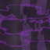

- Looks like
- Six legs, and a mouth that opens like a flower
- Came from
- The Null Static Zone, by way of a crash forty kilometres out at sea
- First appears
- 1.43.0, when the Orbital Railgun wakes Blackwater Station
- Health
- 10 (its kinds 8 to 14)
- Related
- Its five kinds, the pure forms and the biomass, the turned, Parasite Host, Parasite Pod, Xeno Resin, Static Hound, the Hollowed, the Chorus
- Status effects
- Infested (on a creature it's taking over), Parasitized (the old quick brood, before 1.48.0), Brood Fit (when a brood in you has fits), Tuned In (the Relay Core lets you see them)
Description
Parasites skitter, rear up and screech, leap at you, and latch onto the back of your neck. A message tells you: "Something's on the back of your neck - hit it off!" and then "It's getting in - crouch to tear it off!"

Blackwater's specimen notes describe it in two lines: "The parasite: six legs, a mouth that opens like a flower. It goes for the back of the neck." and "In a host it grows in hours. Then the host splits open and there are more of them."
Where it came from
Something came down forty kilometres out at sea. The Blackwater researchers towed what was left of it to their island and built the station round the tank. Its blood doesn't freeze; there are stars in it. On day thirty the cultures took. On day thirty-three the tanks burst.
At first the parasites died in seconds anywhere off Blackwater's island. Since 1.43.3 they live anywhere. Ten days after the Bloom dies, the Watcher comes back to tell you where they're really from:
the infection in those new places - blackwater - it isn't from here.
it came into this realm from another one. the null static zone.
they don't need the flower. they'll get into anything with blood in it - a cow, a horse, a villager.
What it gets into
The infected and Parasite Hosts
The staff it got into at Blackwater are Parasite Hosts: hurt one, or let it near you too long, and it convulses and splits open. Parasites also go for the Flesh's infected (the townspeople, police, soldiers, the Laboratory's staff, the shelter's squad, and the Bloaters, Screamers and Brutes they turn into). One gets onto an infected's back and in at the neck while it stands there in a fit; the brood grows out between its shoulder blades over ten seconds, spurs out of its shoulders and neck, beating and lit. Grown, hurt badly or close to you, it heaves and splits open, and two of them come out (one if it was killed before the brood had grown, none if it burnt).
Anything at all
From 1.43.5 to 1.47 a parasite in one of the game's own creatures grew a quick sac on its back and burst out. Since 1.48.0 it doesn't. It takes the creature over, slowly (two days for an ordinary creature, three for the hard ones), and then the creature is theirs. Any creature at all can carry it now: the game's own, the golems, the Warden, the Wither and the dragon, and the Hollow's own things. Only the Flesh's infected still get the old quick brood. Everything about the outbreak, the stages, the turn and what the turned do is on The Turned.
What they made of the wolves are Static Hounds. What they made of one villager in every village is the Hollowed.
Its kinds
Since 1.48.0, what comes out of something is born of where it was. From Chapter Five they also turn up on their own, now and then, near you: whichever kind lives where you are, up out of the water, down out of the night sky, out of the cave wall, out of the fire.
Tide Parasite
An eel's body behind the same mouth of five petals, a fin down its back, two hooked forelimbs to hold on with, its spots glowing like the things down there. Fast in the water: it darts at you from a long way off, and holds on down there while you drown. Out of the water it drags itself along.
Burrowing Parasite
Long and segmented, eight short legs, its petals drawn out into a point like a drill. It goes into the ground in front of you (you hear it coming under your feet, you see the dirt jump) and comes up under you, mouth first.
Winged Parasite
Four long veined wings like a dragonfly's, its legs hanging. You hear it before you see it: a buzz in the dark. It hangs over you, then drops on you mouth open, and holds on.
Ember Parasite
Black chitin cracked through with light, like coals, smoke and sparks off it as it runs. Fire doesn't touch it and it walks over lava. What it bites burns. Water hurts it.
Void Parasite
Black all through, with stars moving in it, its edges blurred as if it isn't all here. It goes out like a light and is behind you. Hurt it and it's somewhere else. The infested dragon rains these down on you.
The biomass and the pure forms
Since 1.49.0, what the parasite is done with it doesn't leave lying there. When one of the turned dies (nearly always one of the hard ones, and four times in ten one of the rest), a heap of violet biomass is left where it fell: veined, pulsing, chitin forced out through it. It drags at you if you wade through it. It isn't dead. A minute or two later, with anyone about, it heaves itself up into one of the parasite's pure forms, and all that's left is its torn husk. Burn it (fire or lava against it) and nothing gets up.
The pure forms have no host left in them at all, only the parasite's own flesh grown into the shape it needs. They hunt everything that isn't theirs, what they hit they might put one into, and fire hurts them twice as much. They morph: one folds in on itself, its flesh running like wax, and stands up as something else. A Ranged form when it can see you from far off, a Stalker when you run, a Tank when you're close and hurting it.
Stalker Form
Low and quick on four legs, its head split three ways. It climbs walls and only comes while you're not looking at it. It pounces from a distance and mauls you close in.
Ranged Form
Rooted where it stands, a column of flesh as tall as you with a crown of quills. It swells and throws a volley of bone spines at you from a long way off, leading you as you run. Get close and it folds up into something else; lose it long enough and it pulls its roots up to come and find you.
Tank Form
A hulk twice your height with a club of an arm and plates of chitin on its shoulders. It slams the ground, swats you away, grabs you and throws you.
Brood Sack
A swollen sack on four stumps with things moving under its skin. It waddles up to you, swells and bursts: a handful of parasites out of it. Kill it first and it bursts anyway (unless it burnt).
One of them in you
If a parasite holds on for the whole four seconds, it gets in ("It's in you."). Its brood grows over about three days of play, and a meter beside your hotbar fills. You get hungrier; at a quarter you can feel the others through walls; at two fifths you're stronger and faster; at half the sac shows on your back and has fits; at three quarters it's too big to burn out; full, it tears its way out of your back for 7 hearts, and two of them come out.
| What you'll read | What it means |
|---|---|
| Something moves under your skin. | It's started growing. |
| You can feel them now - the others like it, out there. | A quarter grown. You can see the parasite's own through walls. |
| It's feeding you too. You feel strong. You feel fast. You're starving. | Two fifths. |
| There's a lump between your shoulder blades, and it's warm. | Half. Fits start. |
| It's too big to burn out now. | Three quarters. Only a Surgical Kit or a Hush now. |
| It's nearly ready. Cut it out. Now. | Ninety percent. |
Getting it out
- Surgical Kit: hold it to cut the brood out of yourself; use it on someone else to cut one out of them. It hurts and you bleed. Four uses. Made from shears, an iron ingot, string, paper and wool. It also cuts one out of any creature the parasite is taking over, as long as it hasn't started to turn.
- Burn it out: stand in fire long enough to be hurt, before it's three quarters grown. "It's burning in you. Stay in it."
- A Hush: step over the line into one of the Null Static Zone's pale houses and the brood dies. Grown, it tears out of your back as it dies.
Pods and resin
Where they nest they spread their black Xeno Resin over everything, and their pods come up out of it and split open when you come near. Since 1.47.1 a pod is a round egg-sac; split open, it's a torn cup with its four flaps peeled back off the rim and the slime inside. Relay 6 is covered in both.
The parasite egg
After Signing Off
Since 1.50.0, the Carrier's death didn't end it. Half a minute after you're home from the Null Static Zone the Watcher comes to where you are:
it seems the carrier did what it was supposed to do. it carried them - all the way out.
the parasites are increasing. every one of them hostile. the numbers are going off the charts. in your world.
there's nothing we can do about it for now. just try not to die. for me. in the meantime.
From then on the outbreak is worse: the parasite gets into things half again as often, and more of its kinds turn up round you, more of them at once. And the parasite grows itself a mind out in the world: the Chorus, in the Hive.
Advancements
Something Inside, Cut It Out, Burn It Out and It Came Out of Me are all about a brood in you. It Isn't Itself is for being there when something turns. See Advancements.